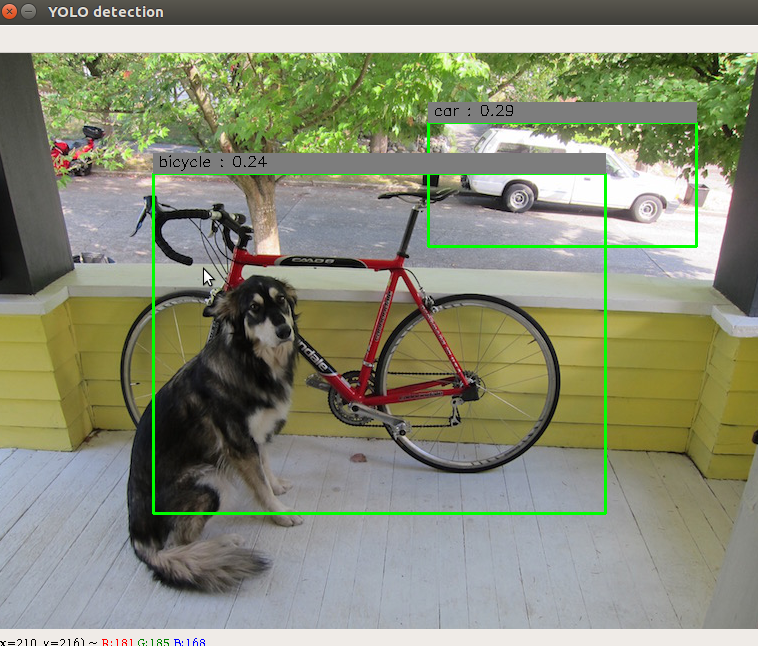

Movidius で YOLO(Caffe) を試す方法¶
YoloNCSを試してみます。
試す環境としては、先のUbuntu16.04の仮想環境(ncsdkのexamplesが動いた状態)を想定して進めていきます。
◇購入方法（Amazon.jp）¶

◇YoloNCSをダウンロード¶
git clone https://github.com/gudovskiy/yoloNCS.git
YoloNCSのReadmeに使い方が書いてありますが、コマンド等が更新されている為、本記事を参考に試してみてください。
◇Yolo(Caffe)モデルをダウンロード¶
cd yoloNCS/py_examples
Googleドライブよりダウンロード(仮想環境の人は仮想環境内でブラウザを立ち上げるか、ファイルを共有してもらう)
https://drive.google.com/file/d/0Bzy9LxvTYIgKNFEzOEdaZ3U0Nms/view?usp=sharing
yoloNCS/py_examples にコピーします。
◇Caffe ModelをNCS用にでコンパイル¶
yoloNCS/py_examples ディレクトリに居ることを想定して
mvNCCompile -w yolo_tiny.caffemodel -s 12 ../prototxt/yolo_tiny_deploy.prototxt
を実行。するとpy_examplesディレクトリに graphが出来ます。
もし、Error importing caffeとエラーが出た際は、以下の内容をコマンドに入力すると治る場合がある。
export PYTHONPATH=$env:"/opt/movidius/caffe/python":$PYTHONPATH
実行後に以下のような渓谷が出るが、これは気にしなくても良いらしい。（紛らわしい）
/usr/local/bin/ncsdk/Controllers/FileIO.py:52: UserWarning: You are using a large type. Consider reducing your data sizes for best performance
"Consider reducing your data sizes for best performance\033[0m")
◇Yolo (Caffe)を試してみる¶
yoloNCS/py_examples ディレクトリに居ることを想定して
python3 yolo_example.py ../images/dog.jpg
| note: | 何度か失敗しますがドライバー周りの問題なので、何回か試すとうまく行く時がある |
|---|
上手くいくと、以下の図が起動するはず・・・
{kind=link}
できました！
◇他の画像を試してみる¶
今回試したYOLOが認識できるワードは
["aeroplane", "bicycle", "bird", "boat", "bottle", "bus", "car", "cat", "chair", "cow", "diningtable", "dog", "horse", "motorbike", "person", "pottedplant", "sheep", "sofa", "train","tvmonitor"]
の２０種類だけですが、最新のYOLOv2になると９０００種類の認識が出来るそうです。
YOLOv2はCaffeに対応していないので、次のTensorFlowで試したいと思いますが、面白いのでこのまま画像認識されます。
遊び方としては
python3 yolo_example.py <画像ファイル>
といった感じで、画像際るのアドレスを張ればＯＫそうなので
Googleを使って猫画像を拾ってきます。
wget http://tgs.jp.net/wp-content/uploads/2016/12/12.jpg
python3 yolo_example.py 12.jpg

面白い。